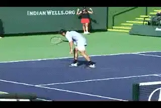
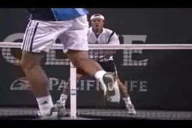
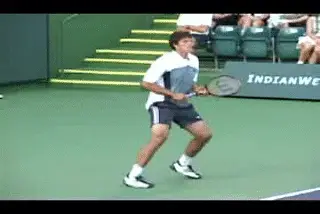
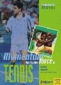

When Momentum is Totally Against You¶
By Alistair Higham¶

When momentum is totally against you it can lead to mental and physical negativity, even at the pro level.
When the momentum is totally against you, it is the easiest thing in the world to believe it's just not your day. At one point you were up a set. But now you're 4-1 down in the third. We've all been there. For most players it seems that the hill is too big to climb.
They conclude that the flow of the match is irreversibly with the opponent. Then it becomes all too easy to display negative body language, or indulge in fits of temper giving your opponent even more encouragement. At times like these players sometimes wonder why they bother playing at all!
The fact is, however, that matches do turn around regularly from seemingly impossible positions. The key point is to understand this. You are only in a stage of momentum. When momentum is totally against you, that is just one of many stages. And those stages always change over the course of a match.

**Champions know matches can turn around from \"impossible situations.\"**
If you can shift the momentum to a different stage, the match can start to change before your eyes. Miracle comebacks aren't actually miracles. They are the inevitable result of shifting and controlling momentum. The object should not be the comeback itself. The object should be to turn around the underlying dynamics that control the outcome. Still, changing momentum from this stage is the most difficult transition in tennis. It's mentally tougher than moving up a stage at any other time. But if you can recover from the stage where momentum is totally against you, then turning points may emerge. The match may subtly begin to turn around, and the nerves of your opponent may start to work in your favour instead of the other way around.
Don't Lose Hope
The most important thing when the momentum is totally against you, is not to lose hope. It is not easily done, because your opponent is full of confidence, has the cushion of a lead and is trying to finish you off. That would be tough enough at any time, but it usually happens when you are feeling frustrated, disheartened and maybe tired, having spent considerable time and energy only to find yourself in this unfavourable position. Once hope is gone you have no chance of turning things around.

**Moving momentum when you are far behind is mentally tougher than at any other time.**
Your opponent may seem to be playing too well for you to have a chance of victory, but you should remember how easy it is to play well when the momentum is totally with you. It is the same for them. They won't be as good when the momentum has shifted.
The road to making a comeback is steep at first but it will get easier if you can dig in and get a foothold. Once you have stuck in and begun to make a comeback, two factors will work in your favour: you will begin to feel better and your opponent will dislike the fact that it's not as easy as it was. This double change in energy gives the best conditions for a change in the flow of the match.
Take Your Time
When the momentum is totally against you, take your time. Let the steam go out of your opponent's game. You have to take the time allowed and find some way of getting points on the scoreboard. Momentum in this situation tends to change slowly, and you have to build the foundations for a change.

\ Giving up hope means giving up the chance of changing momentum.Playing one point at a time is very important. When you are well behind in momentum, it is not possible just to collect points quickly like you can when you are in the lead. It's a bit like trying to get out of a pit. Put great emphasis on every step.
[\ [Winning one game can make all the difference.]] If you can stay in touch with your opponent on the scoreboard when you are well behind in momentum, you will be closer when things turn around. For example, if you can somehow hold onto your serve when you are 1-4 in the final set, then 2-4 is a lot closer than 1-5 if your opponent starts to wobble or you start to build some momentum.
This is where the phrase weathering the storm applies. You hear it in other sports as well. In football (what you Americans call soccer) in this situation, getting the ball and somehow keeping possession of it is crucial. The same applies in tennis. You have to find a way of staying in the match. Staying in the match is the best way of building foundations for a change in the future. What you are building toward is a potential turning point that occurs when you are not so far behind in the momentum.
It is particularly important not to lose hope when you are tired. You never know how tired your opponent is as well. Don't let things slide. Stay in touch with the score by trying to win the first point of each game and taking each point one at a time.
Have a Cunning Plan
Here's an interesting ploy: If you are a set up, but well behind in the second set of a three-set match, you might consider the effect of starting the final set fresh, having had a set in which you can, as it were, take a break from the tactics and intensity of play which won you the first set.

\"Exhibition Tennis\" can produce winners that move momentum.
You can actually take advantage of being well behind in the second set by deliberately playing what I call exhibition tennis. This means you create the impression that you are no longer trying or no longer care about the outcome of the match. The plan is twofold and in a sense is a win-win ploy.
If you lose the second set, you lull your opponent into a sense of false security so that for the crucial start of the third set you can hit your opponent with different tactics and/or a new attitude. However, this approach of exhibition tennis may allow you to unsettle your opponent with quick, spectacular one-off winners to get yourself quickly out of the momentum totally against you stage. It is then possible to revert to the strategy that won you the first set, knowing that you have got back the necessary momentum and that your opponent's nerves may become a factor as you continue your comeback.

**The stages of momentum control the outcome\--not the score at a given moment.**
Read the Future
A final point to consider. Momentum moves through the five stages outlined in the first article (link), and sometimes you cannot control it. It can run its own course and appear to have a life of your own. Therefore be wise. Realise there is always a strong chance that it will change.
Let that knowledge give you hope when you are well behind. The key is to control your own mental energy and watch for signs of your opponent's change in mental energy, particularly after obviously significant events.
Remember what makes momentum turn: A change in your opponent's mental energy -- either gradual or sudden. Or a change in your mental energy -- either gradual or sudden. Remember it is the stage of momentum, not the score at the moment that will ultimately determine the outcome of the match.

Alistair Higham is the National Manager of Coach Development for the LTA, the governing body for tennis in Great Britain. He is the author of [Momentum: The Hidden Force in Tennis]. Alistair is a former professional player who continues to compete successfully at the highest levels of English regional tennis. He has developed and coached dozens of top junior players, and traveled extensively on the international junior circuit, where he has had the unique opportunity to make a close study of the hidden force that dictates so much in the outcome of competitive tennis matches.

Momentum: The Hidden Force in Tennis Alistair Higham
Read this important new perspective on momentum and the development of the mental game, by top English coach Alistair Higham. Based on his observation of literally thousands of competitive matches as well as his own professional career, this book will give you the perspective and the tools to create momentum in your own matches and deal with the critical turning points that are the difference between winning and losing.